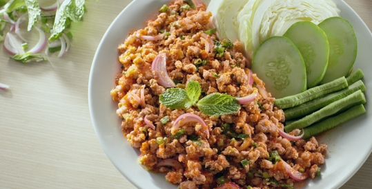
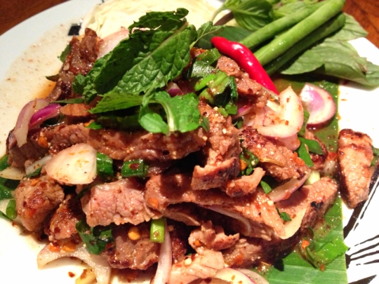
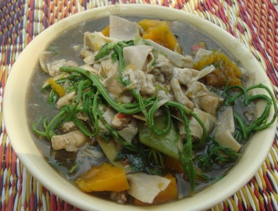
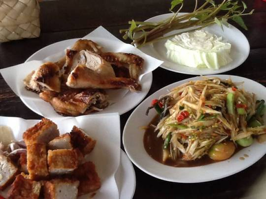

ภาคอีสาน มีสภาพพื้นดินโดยทั่วไปค่อนข้างแห้งแล้ง และในอดีตเป็นภาคที่มีความชุกของปัญหาโภชนาการค่อนข้างสูง อาหารพื้นเมืองของชาวอีสานนั้น อาหารหลักคือข้าวเหนียวเช่นเดียวกับภาคเหนือ อาหารหลักมี 3มื้อ อาหารเช้าเรียกข้าวเช้า อาหารกลางวันเรียกข้าวเพล และอาหารเย็นเรียกข้าวแลง อาหารของภาคอีสานส่วนใหญ่จะมีรสเผ็ด เค็ม เปรี้ยว แต่ไม่นิยมรสเปรี้ยวมาก ซึ่งอาหารอีสานประเภทลาบ ส้มตำ ที่เป็นขนานแท้จะออกรสเผ็ดและเค็ม รสเปรี้ยวทางอีสานใช้มะนาว มะกอก ส้มมะขาม มดแดง รสเค็มใช้ปลาร้า ชาวอีสานไม่นิยมเครื่องเทศแต่ใช้พืชประเภทแต่งกลิ่น เช่น ผักชีลาว ตะไคร้ ใบมะกรูด ผักไผ่ อาหารเนื้อสัตว์ของชาวอีสานส่วนใหญ่จะเป็นเนื้อวัว เนื้อควาย ปลาน้ำจืด และสัตว์ที่จับได้ในท้องถิ่น ในอดีตชาวอีสานไม่นิยมเลี้ยงหมู จึงไม่ค่อยมีอาหารที่ทำด้วยหมู แหล่งอาหารของชาวอีสานแบ่งได้เป็น2แหล่งคือ อาหารที่หาซื้อได้จากตลาด ซึ่งส่วนใหญ่จะเป็นอาหารของคนในเมือง ได้แก่ ส้มตำ ไก่ย่าง ลาบ ต้มยำ ปลาทูทอด ส่วนอีกแหล่งเป็นแหล่งที่ได้จากธรรมชาติตามท้องไร่ท้องนาหรือในป่า เช่น กบ เขียด อึ่งอ่าง กิ้งก่า แมลงชนิดต่างๆ การประกอบอาหารของคนภาคอีสาน มักจะใช้วิธีต้ม แกง ปิ้งหรือย่าง เช่นเดียวกับทางภาคเหนือ อาหารท้องถิ่นของภาคอีสานแทบจะไม่ใช้ไขมัน หรือ น้ำมันในการประกอบอาหาร ดังนั้นอาหารพื้นบ้านของคนภาคอีสานในอดีตและที่ยังพบเห็นในชนบทจะมีปริมาณไขมันต่ำมาก ส่วนใหญ่เป็นอาหารที่มีรสเผ็ดและเค็ม ซึ่งมักจะเป็นอาหารที่มีน้ำขลุกขลิก เพื่อให้สามารถใช้ข้าวเหนียวจิ้มลงในอาหารได้ และยังพบว่าชาวอีสานยังกินพืชผักพื้นบ้านที่เป็นพืชที่หาได้ในท้องถิ่นเป็นผักจิ้ม น้ำพริก หรือกินร่วมกับลาบ ส้มตำ เช่น ผักติ้ว ผักกระโดน | |
|  | |
| ลาบ | |
|---|---|
|  | |
| น้ำตก | |
|  | |
| แกงลาว | |
|  | |
| ส้มตำ ไก่ย่าง | |
 |
 |